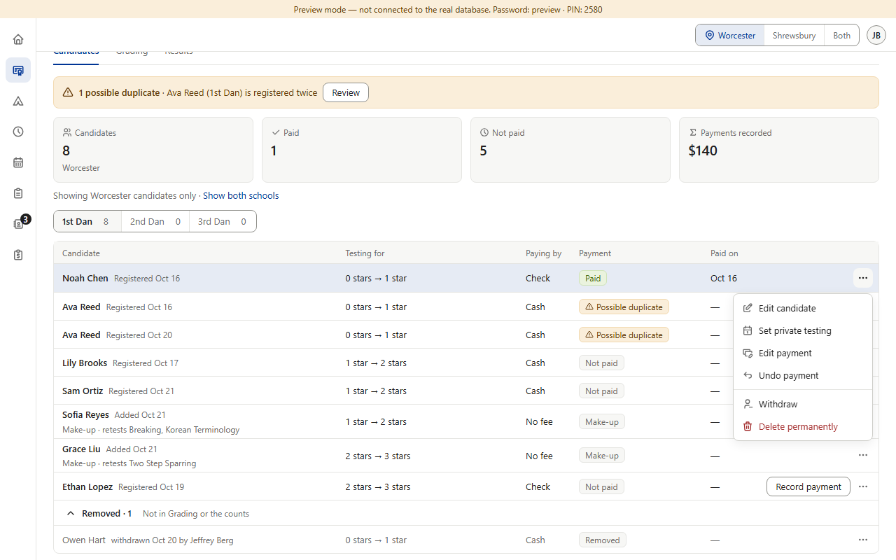
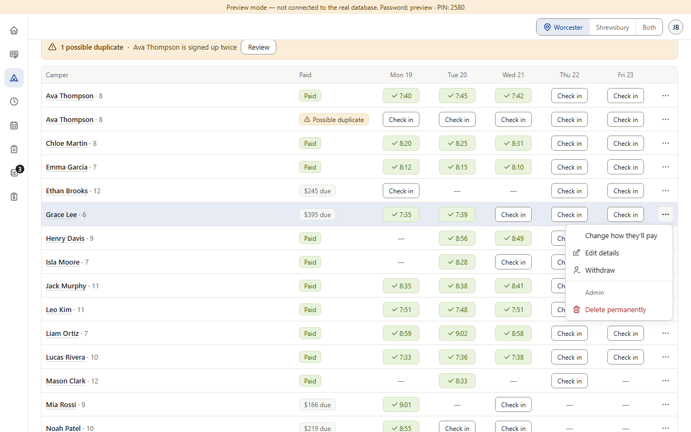
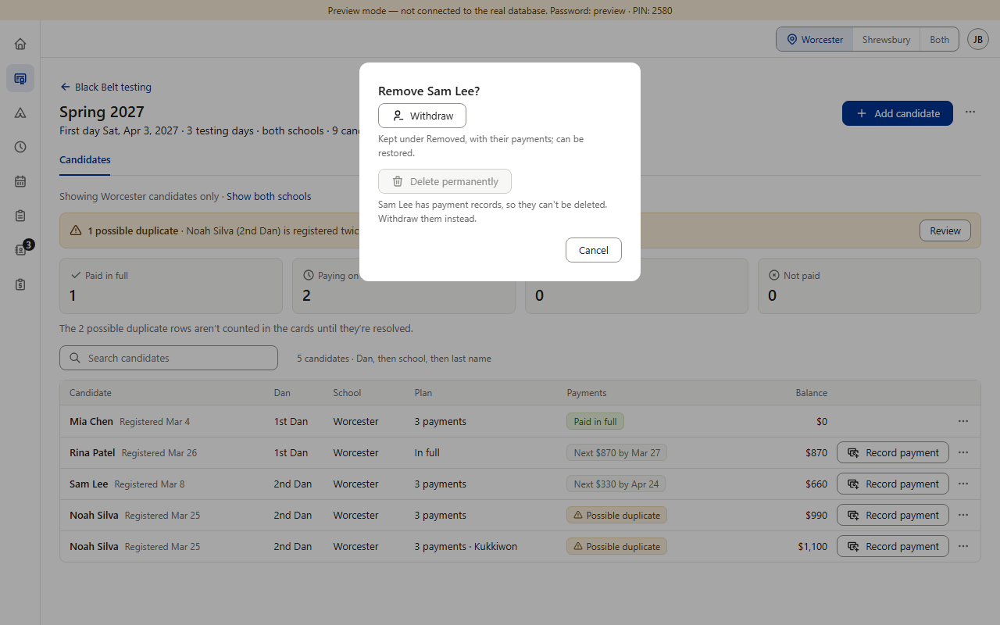
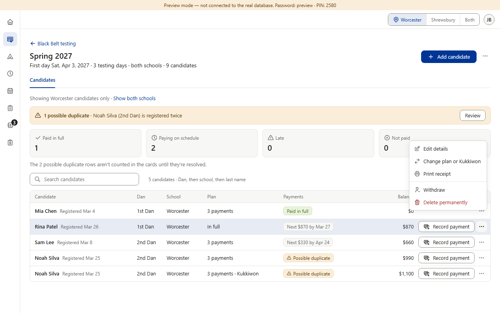
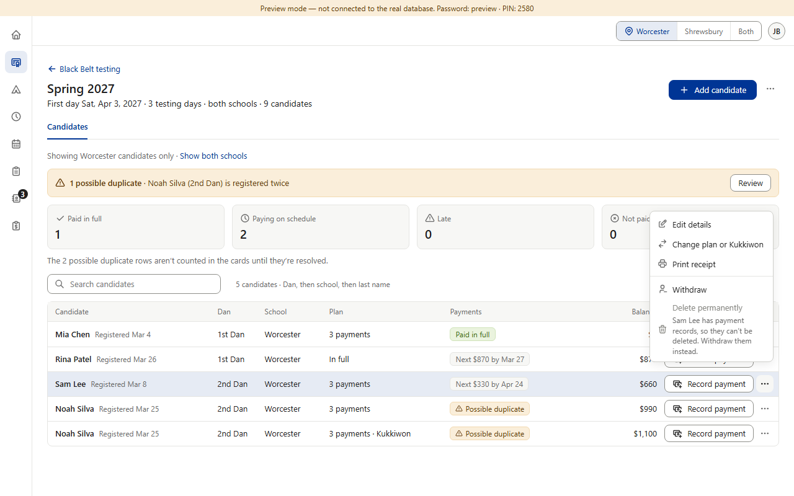

Today · the row ⋯ menu in each roster




Not part of this question: Color Belt private testing's “Cancel private testing” is blue and asks first, because nothing is deleted (staff can cancel; only admins can restore). Prospects' “Delete prospect” is red and asks first.
Options B and C · drawn on Black Belt's menu


Copies what's already there: the Withdraw / Delete permanently pair Color Belt, Star and Camps already have, and the gray reason line the app already uses inside menus (e.g. Color Belt's grayed Restore). Withdraw happens at once with a 5-second Undo (rule 1.4, item 6); Delete permanently asks first and names what goes. Pictures 6–8 are drawn over Black Belt's real menu; nothing in the app was changed.